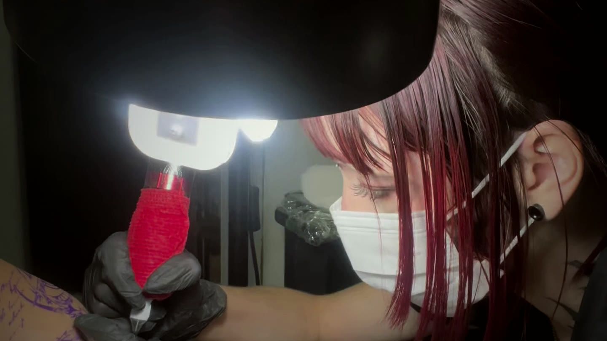
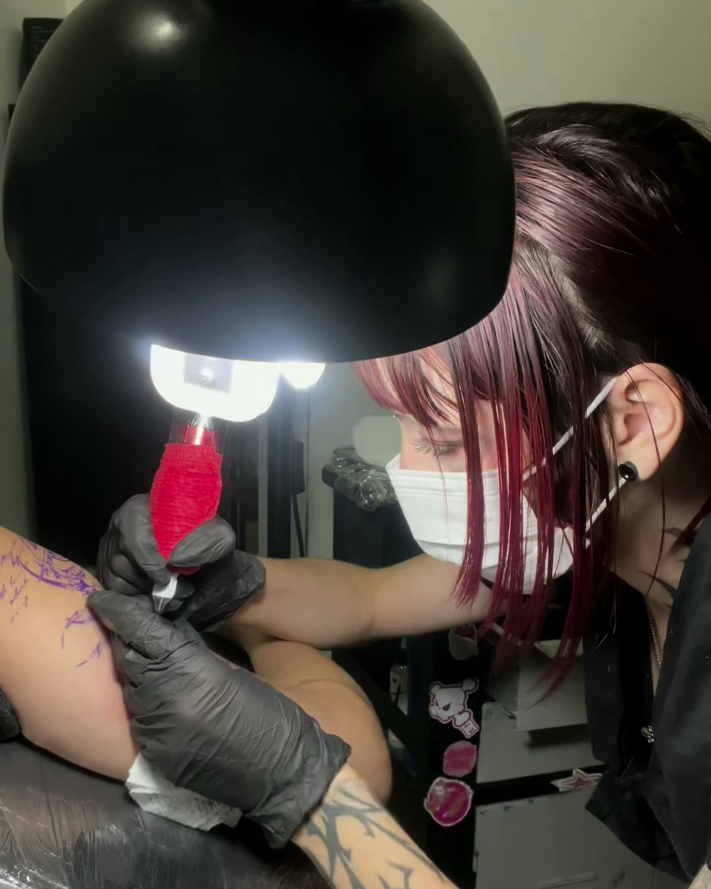

Tatuadora · Glória, Vila Velha — ES
Trinitytattoo
Blackwork, lettering e anime. Traço firme, preto de verdade.
Role
Trabalhos selecionados
Traços que ficam.
Do traço à pele
Arraste e veja o desenho virar tatuagem.
Pares reais do mesmo trabalho: a arte, a marcação e a pele. Nada de imagens diferentes simulando transformação.
Fotos publicadas pela artista no Instagram.
O que está sendo comparado
Mouse, toque ou teclado (← →). Cada caso real será legendado com o que mostra: nada de “cicatrizada” como “antes”.

A artista e o processo
Cada peça nasce para uma anatomia.
Trinity mistura referências de anime e mangá, lettering e blocos de preto com leitura firme. O desenho é pensado junto com a região do corpo e a ideia de quem chega.
- IdeiaVocê conta o que imagina e envia referências.
- AvaliaçãoEla mesma avalia e responde o orçamento.
- DesenhoA arte é construída para o seu corpo.
- SessãoExecução no estúdio, com cuidado e acompanhamento.
Convite
Tem uma ideia? Conte pra ela.
O pedido chega organizado — ideia, região, tamanho e referências — para a Trinity avaliar e responder pessoalmente.
Conte sua ideia